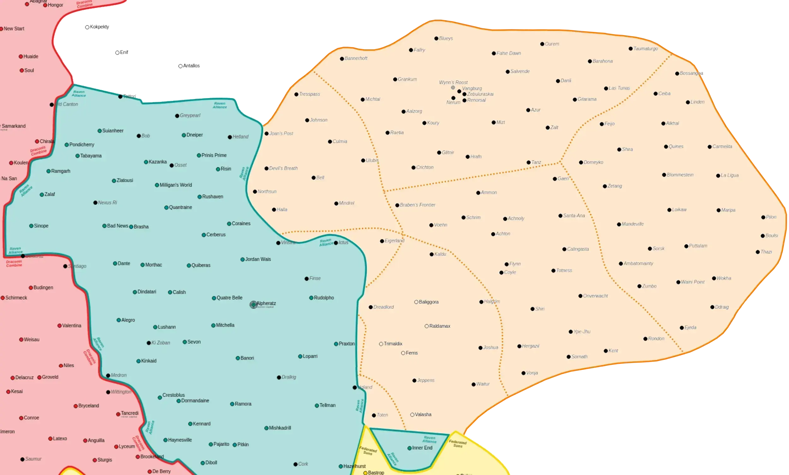

1
Introduction
2
Background
3
Force Management
4
Scenarios
5
League Play
6
Event Play
7
Outworlds Wastes Map - ilClan Era
8
Sample Force Roster
9
Sample Scenario Logistics Tracking
10
Sample Dropship Customization Tracking
11
Force BV Adjustments
12
References
[
prev
] [
up
] [
next
]
7
Outworlds Wastes Map - ilClan Era

Outworlds Wastes - 3151
[
prev
] [
up
] [
next
]